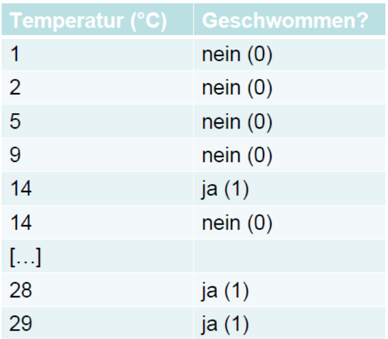
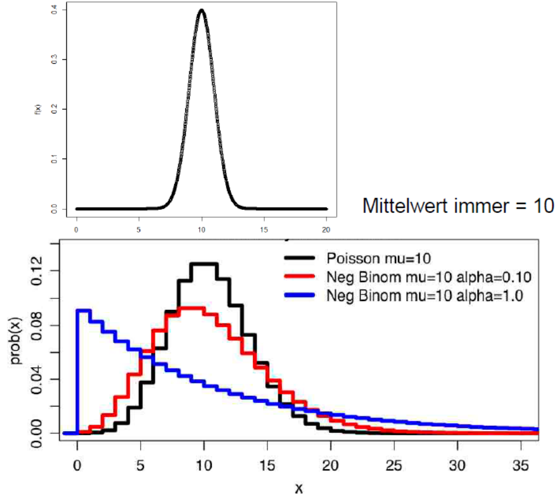

Statistik 4
Komplexere Regressionsmethoden
Heute geht es hauptsächlich um generalized linear models (GLMs), die einige wesentliche Limitierungen von linearen Modellen überwinden. Indem sie Fehler- und Varianzstrukturen explizit modellieren, ist man nicht mehr an Normalverteilung der Residuen und Varianzhomogenität gebunden. Bei generalized linear regressions muss man sich zwischen verschiedenen Verteilungen und link-Strukturen entscheiden. Spezifisch werden wir uns die Poisson-Regressionen für Zähldaten und die logistische Regression für ja/nein-Daten anschauen. Danach folgt ein Einstieg in nicht-lineare Regressionen, die es erlauben, etwa Potenzgesetze oder Sättigungsfunktionen direkt zu modellieren. Zum Abschluss gibt es einen Ausblick auf Glättungsverfahren (LOWESS) und general additive models (GAMs).
Lernziele
Von linearen Modellen zu GLMs
Zwei Beispiele
Nehmen wir an, wir wollten modellieren, wie viele Besucher an einem Strandabschnitt zur Mittagszeit in Abhängigkeit von der herrschenden Lufttemperatur anzutreffen sind. Unsere Daten sehen folgendermassen aus und mit den bekannten Methoden können wir ein lm rechnen, dessen Ergebnis signifikant ist und sogar recht viel der Gesamtvarianz erklärt:


Unsere abhängige Variable ist eine Zählung und verhält sich daher anders als eine echte metrische Variable (etwa einer Messung des pH-Wertes). Zähldaten stellen lineare Modelle (lm) vor vier Probleme:
Lineare Modelle sagen immer auch das Auftreten negativer Werte voraus, wohingegen absolute Häufigkeiten immer positive Ganzzahlen sind (im obigen Beispiel würde das Modell bereits im gefitteten Bereich, unter etwa 12 °C, negative Menschen vorhersagen).
Nahezu immer sind Zähldaten rechtsschief verteilt, also nicht normalverteilt und auch nicht symmetrisch
Bei Zähldaten nimmt nahezu immer die Varianz mit dem Mittelwert zu.
Zähldaten folgen keiner kontinuierlichen (wie die Normalverteilung), sondern einer diskreten Verteilung.
Theoretisch sind also die Voraussetzungen für ein lineares Modell bei Zähldaten nie erfüllt. In der Praxis gibt es aber Situationen, wo die Verletzung der Annahmen für das Modell nicht weiter problematisch ist und man mit einem lm zu korrekten Aussagen gelangen kann. Relativ problemlos funktioniert das (und wird auch noch häufig getan), wenn (a) alle Werte der Antwortvariablen weit von 0 entfernt sind und (b) die Werte der Antwortvariable um deutlich weniger als eine Grössenordnung (d.h. Faktor 10) variieren. Im obigen Beispiel beträgt der Quotient des grössten und kleinsten Wertes der Antwortvariablen 2000 / 12 = 167. Mit etwas Erfahrung sehen wir schon im Scatterplot, dass hier Linearität und Varianzhomogenität verletzt sind.
Ein anderes Beispiel, bei dem ein lineares Modell offensichtlich und immer scheitern würde, wäre eine Befragung von Touristen an Tagen unterschiedlicher Temperatur, ob sie schwimmen gegangen sind. Das Ergebnis könnte wie folgt aussehen (stark gekürzte Tabelle, an jedem Tag (d.h. bei gleicher Temperatur) wurden jeweils mehrere Touristen befragt):

Bei solchen “binären Daten” bestehen zwei hauptsächliche Probleme für lineare Modelle:
Die Werteverteilung ist nach unten und nach oben begrenzt.
Es gibt überhaupt nur zwei mögliche Werte, nein und ja, als 0 und 1 codiert.
Die Idee der Generalized linear models (GLMs)
Generalized linear models (GLMs) verallgemeinern lineare Modelle (LMs), um Fälle wie die geschilderten (Zähldaten, Binärdaten, für weitere Beispiele siehe Crawley (2015)) modellieren zu können. “Generalisiert” heissen die GLMs aus folgenden drei Gründen:
- Alle LMs sind im Begriff GLM eingeschlossen (aber viele GLMs sind keine LMs).
- Die Verteilung der “Zufallskomponente” (= Residuen) kann sich von einer Normalverteilung unterscheiden (muss aber aus der exponentiellen Familie von Verteilungen sein).
- Die abhängige Variable kann auf verschiedene Weise mit den Prädiktoren verknüpft (linked) sein.
Die drei Komponenten eines GLM
Ein GLM setzt sich aus drei Komponenten zusammen, die relativ frei kombiniert werden können (aber für bestimmte Zufallskomponenten gibt es Standard-Link-Funktionen):
- Zufallskomponente (d. h. die Verteilung der Residuen):
- normal
- binomial: z. B. ja/nein, tot/lebendig
- Poisson: Zähldaten (funktioniert aber nicht immer)
- gamma
- negativ binomial (Dispersionsparameter muss geschätzt werden)
- Systematische Komponente (d. h. die x-Werte): es ist alles möglich, was wir schon von LMs her kennen:
- kontinuierliche (metrische) Prädiktoren
- kategoriale Prädiktoren
- Interaktionen von Prädiktoren
- polynomiale Funktionen
- jewede Kombination aus den vorhergehenden Elementen
- Link-Funktion:
- Identität (identity)
- log (für Zähldaten)
- logit (für Binärdaten)
Mögliche Verteilungen von Werten und von Varianzen
Was mit verschiedenen Verteilungen der Residuen gemeint ist, veranschaulichen die folgenden beiden Abbildungen von vier Häufigkeitsverteilungen mit dem gleichen Mittelwert. Oben sind die kontinuierliche Normalverteilung und unten drei unterschiedliche diskrete Verteilungen (Poisson, negativ-binomial) zu sehen:

Auch die Beziehung von Varianzen zum (vorhergesagten) Mittelwert müssen keinesfalls immer konstant sein, wie wir das von den linearen Modellen kennen. Vielmehr zeigen viele Datentypen eine systematische Veränderung der Varianz mit dem Mittelwert:

Typen von GLMs
Eine Übersicht gängige GLM-Typen bietet die folgende Tabelle (man beachte die uneinheitliche Gross-/Kleinschreibung der Verteilungen):

Man beachte, dass ein GLM mit Normalverteilung (gaussian) und identity-Link identisch mit einem LM ist.
Wenn man dieser Anleitung strikt folgen würde (was auch Smilauer 2017 nicht tut), dürfte man LMs nur dann verwenden, wenn die Antwortvariable auch negative Werte annehmen kann und ansonsten ein Gamma-GLM rechnen. In Realität werden Gamma-GLMs aber fast ausschliesslich für death and failure-Daten verwendet, bei denen die Varianz mit dem Quadrat des Mittelwertes zunimmt.
GLMs mit binomialer, Poisson, Gamma- und Gauss (Normal)-Verteilung sind in Base R implementiert, für negative.binomial benötigt man das Package MASS. In diesem Kurs gehen wir im Detail nur auf die beiden meistbenutzten GLM-Typen ein, Poisson-Regression für Zähldaten und logistische Regression für Binärdaten. Mehr zu den übrigen Typen findet man u. a. in Crawley (2015), Dunn & Smyth (2018) und Fox & Weisberg (2019)
Das Fitten und die Modellgüte von GLMs
Bei einem linearen Modell (LM) wird die Lösung durch Minimierung der Summe der Abweichungsquadrate erzielt. Diese Lösung lässt sich direkt, immer eindeutig und sogar von Hand ausrechnen. GLMs dagegen fitten die Modelle in einem iterativen Verfahren, indem die Likelihood maximiert wird. Deswegen spricht man auch von Maximum likelihood (ML). Nach erfolgtem Fitten werden die Werte mit der Umkehrfunktion der Link-Funktion auf die originale Skala zurücktransformiert.
Als Mass der Variabilität oder lack of fit wird bei GLMs die Devianz D verwendet, die folgendermassen definiert ist:
\[ D_i = -2 × \text{log likelihood} (\text{Modell}_i | \text{Daten}) \]
Je nach GLM-Typ wird die Devianz anders berechnet:

Poisson-Regressionen für Zähldaten
Berechnung
Die Struktur des glm-Befehls in R ist genau identisch mit jenem des lm-Befehls. Nur muss man zusätzlich die Verteilung (family) und ggf. die Link-Funktion (wenn nicht die Standard-Link-Funktion der jeweiligen Verteilung) angeben. Schauen wir uns nun die Ergebnisse für unsere Zähldaten der Strandbesucher an, zunächst mit einem LM, dann mit einem Gauss-GLM und schliesslich mit einem Poisson-GLM:
lm.strand <- lm(Besucher~Temperatur)
glm.gaussian <- glm(Besucher~Temperatur,family=gaussian)
glm.poisson <- glm(Besucher~Temperatur,family=poisson)
summary(lm.strand)Coefficients:
Estimate Std. Error t value Pr(>|t|)
(Intercept) -855.01 290.54 -2.943 0.021625 *
Temperatur 67.62 11.80 5.732 0.000712 ***summary(glm.gaussian)Coefficients:
Estimate Std. Error t value Pr(>|t|)
(Intercept) -855.01 290.54 -2.943 0.021625 *
Temperatur 67.62 11.80 5.732 0.000712 ***summary(glm.poisson)Coefficients:
Estimate Std. Error z value Pr(>|z|)
(Intercept) 3.500301 0.056920 61.49 <2e-16 ***
Temperatur 0.112817 0.001821 61.97 <2e-16 ***Wie nach den Erläuterungen im vorigen Kapitel zu erwarten war, sind die Ergebnisse des LMs und des Gauss-GLMs vollkommen identisch. Jene des Poisson-GLMs sind dagegen anders, insbesondere viel höher signifikant.
Interpretation und Visualisierung der Ergebnisse
Im Falle des lm können wir aus den Parameter-Schätzungen (Spalte Estimate im summary) direkt die sich ergebende Funktionsgleichung aufschreiben:
\[ \text{Besucher} = -855 + 68 \times \text{Temperatur}/\text{°C} \]
Bei einem glm sind die Parameter-Schätzungen dagegen nicht direkt interpretierbar, da sie sich auf eine transformierte Skala beziehen, welche durch die Link-Funktion angegeben ist. Die Standard-Link-Funktion bei einem Poisson-GLM ist log, also der natürliche Logarithmus (ln). Unser Ergebnis lässt sich damit wie folgt schreiben:
\[ \ln(\text{Besucher}) = 3.50 + 0.11 \times \text{Temperatur}/\text{°C} \]
Da uns aber nicht ln (Besucher), sondern die Besucherzahl selbst interessiert, müssen wir die Umkehrfunktion der Link-Funktion anwenden, bei ln also exp. Es ergibt sich:
\[ \text{Besucher} = \exp(3.50 + 0.11 \times \text{Temperatur}/\text{°C}) \]
Damit können wir auch die vorhergesagten Werte für verschiedene Temperaturen berechnen:
\[\begin{align*} 0 \text{°C}: \text{Besucher} &= \exp(3.50) = 33 \\ 30 \text{°C}: \text{Besucher} &= \exp(3.50 + 30 \times 0.11) = \exp(6.83) = 925 \end{align*}\]
Wenn wir das Ganze Plotten wollen, benötigen wir den predict- und den lines-Befehl. Wie man, sieht muss auch hier auf die vorhergesagten Werte beim Plotten noch die Umkehrfunktion (exp) angewandt werden:
xv <- rep(0:40,by=.1)
plot(Temperatur,Besucher,xlim=c(0,40))
yv <- predict(lm.strand,list(Temperatur=xv))
lines(xv, yv,lwd=3,col="blue")
yv2 <- predict(glm.poisson,list(Temperatur=xv))
lines(xv, exp(yv2),lwd=3,col="red")
Overdispersion als Problem
Mathematisch beschreibt die Poisson-Verteilung Ereignisse pro Zeiteinheit, wenn sie mit einer bestimmten Rate (Mittelwert) erfolgen, die Ereignisse selbst aber unabhängig voneinander sind. Für ökologische/umweltwissenschaftliche Zähldaten sind diese Voraussetzungen oft nicht exakt gegeben, sie folgen daher nicht immer genau einer Poisson-Verteilung, sondern weisen teilweise eine Overdispersion auf. Für eine Poisson-Regression wird eine \(\text{Dispersion} = \frac{\text{Residual deviance}}{\text{Residual degrees of freedom}} = 1\) angenommen. Wenn die Dispersion wesentlich/signifkant grösser als 1 ist, liegt Overdispersion vor. Residual deviance und Residual degrees of freedom findet man im summary des glm:
summary(glm.poisson)[…]
(Dispersion parameter for poisson family taken to be 1)
Null deviance: 6011.8 on 8 degrees of freedom
Residual deviance: 1113.7 on 7 degrees of freedom
AIC: 1185.1Man sieht hier, dass der Quotient von 1113.7 und 7 weit höher als 1 ist. Mit dem Dispersionstest im Package AER kann man formal auf einen signifikanten Unterschied testen:
library(AER)
dispersiontest(glm.poisson)data: glm.poisson
z = 3.8576, p-value = 5.726e-05
alternative hypothesis: true dispersion is greater than 1
sample estimates:
dispersion
116.5467 Wenn man eine signifikante Overdispersion gefunden hat, gibt es zwei Lösungsmöglichkeiten:
Quasi-Poisson-Verteilung. Hierbei schätzt der Algorithmus den Dispersionsparameter aus den Daten und passt die angenommene Verteilung entsprechend an. Die Methode ist im Befehl glm in Base R implementiert:
glm.quasi <- glm(Besucher~Temperatur,family=quasipoisson) summary(glm.quasi)Coefficients: Estimate Std. Error t value Pr(>|t|) (Intercept) 3.50030 0.69639 5.026 0.00152 ** Temperatur 0.11282 0.02227 5.065 0.00146 ** --- Signif. codes: 0 ‘***’ 0.001 ‘**’ 0.01 ‘*’ 0.05 ‘.’ 0.1 ‘ ’ 1 (Dispersion parameter for quasipoisson family taken to be 149.6826)Man sieht, dass im Vergleich zur Berechnung mit einem einfachen Poisson-GLM die Parameterschätzungen nicht verändert haben, jedoch die Signifikanzen niedriger ausgefallen sind (d. h. höhere p-Werte).
Negativ-binomiale Verteilung: Oftmals erzielt man damit ähnliche, in besonderen Fällen allerdings auch deutlich andere Ergebnisse. Was besser ist, hängt vom Einzelfall ab und ist u. U. recht “tricky”. Weitere Details, siehe Ver Hoef & Boveng (2007).
Logistische Regressionen für Binärdaten
Logistische Regressionen werden für alle binären Antwortvariablen verwendet, etwa für Vorkommensdaten (Inzidenzdaten). Das folgende Abbildungspaar zeigt links, was passieren würde, wenn man solche Daten mit einem lm fitten würde und rechts, die korrekte Modellierung mit einem logistischen glm:

Prinzipielles Vorgehen
- Die abhängige Variable muss als Vektor vorliegen, der entweder nur 0 und 1 enthält oder aber ein Faktor mit genau zwei Level ist.
- Es wird ein glm mit family=binomial gerechnet.
- Der voreingestellte Link ist logit, alternativ geht auch log-log.
- Overdispersion ist bei Binärdaten nicht relevant.
- Wie bei allen (multiplen) Modellen müssen wir eine Modellvereinfachung des vollen Modells vornehmen, wofür im Prinzip die gleichen drei Methoden zur Verfügung stehen, die wir schon kennen:
- Modellselektion I: sukzessive Vereinfachung durch Entfernen nicht-signifkanter Terme.
- Modellselektion II: sukzessive Vereinfachung mittels Vergleich der Devianzen zweier Modelle mit Chi-Quadrat-Test (Achtung: Unterschied zu lm, wo wir eine ANOVA, d. h. eine F-Test verwendet haben).
- Modellselektion III: mittels AICc: Berechnung aller möglichen Modelle und dann entweder Auswahl jenes mit dem niedrigsten AICc oder Multimodel inference.
Die Theorie dahinter
Das “logit” (L) ist ein zentrales Element der logistischen Regression. Ein logit ist als der natürliche Logarithmus eines “odds” definiert. “Odds” hatten wir schon kurz beim Vierfelder-Assoziationstest (Chi-Quadrat- bzw. Fishers exakter Test). Sie bezeichnen die Wahrscheinlichkeit eines Ereignisses durch die “Gegenwahrscheinlichkeit”. Es gilt also Folgendes:
\[ L = \ln\left( \frac{p}{1 - p} \right) \]
Warum arbeitet man mit “odds” und “logits”? Wenn man nur p modellieren würde, wären die möglichen Werte auf 0 … 1 begrenzt. “Odds” dagegen können Werte zwischen 0 und ∞ annehmen. Der Logarithmus schliesslich sorgt für eine symmetrische Verteilung der originalen Wahrscheinlichkeiten unter 50 % (jetzt zwischen –∞ und 0) und der originalen Wahrscheinlichkeiten über 50 % (jetzt zwischen 0 und +∞).
Bei GLMs wir ja immer die abhängige Variable mit der Link-Funktion transformiert. Damit modelliert eine logistische Regression das folgende Modell (in einer multiplen logistischen Regression ggf. auch mit x1, x2 usw.):
\[ \ln\left( \frac{\pi(y)}{1 - \pi(y)} \right) = \ \beta_{0} + \beta_{1}x \]
Modelldiagnostik und Ergebnisse
Die Beurteilung von Validität und Güte/Relevanz eines logistischen Modells unterscheidet sicher erheblich von einem lm:
- Eine visuelle Inspektion der Residualplots ist hier nicht informativ.
- Es gibt diverse numerische Goodness-of-fit-Tests für das Modell, am einfachten der Vergleich der Abweichung der Devianz (\(G^2\)) von der geforderten \(\chi^2\)-Verteilung.
- Das konventionelle Gütemass \(R^2\) funktioniert ebenfalls nicht. Statt dessen kann man die Modellgüte mit einem Pseudo-\(R^2\) ausdrücken:
\[ R^2= 1 - \frac{\text{Devianz Total}}{\text{Devianz Residuen}} \]
Da nicht die abhängige Variable (d. h. die Auftretenswahrscheinlichkeit), sondern ihr logit modelliert wurde, muss man die beiden Parameterschätzungen erst in informative Grössen übersetzen. Es sind dies:
Lagemass (d. h. bei welchem x1-Wert ist die Wahrscheinlichkeit von 0 und 1 gleich hoch; auch als “LD50” = “lethal” does for 50% of the individuals” bezeichnet, basierend auf Anwendungen on logistischen Regressionen in Toxizitätstests): \(- \beta_0 / \beta_0\)
Steilheitsmass (d.h. wie scharf/steil ist der Übergang von 0 zu 1, ausgedrückt als die relative Änderung der “odds” bei Zunahme von x1 um eine Einheit): \(\exp(\beta_1)\)
Umsetzung in R
Schauen wir uns diese ganzen Schritte im Fall unseres Bade-Beispiels an, also der Wahrscheinlichkeit, dass eine Person am Strand schwimmen geht in Abhängigkeit von der Temperatur. Die Definition des Modells in R ist wie gehabt einfach:
model <- glm(bathing~temperature,data=bathing,family="binomial")
summary(model)Coefficients
Estimate Std. Error z value Pr(>|z|)
(Intercept) -5.4652 2.8501 -1.918 0.0552 .
temperature 0.2805 0.1350 2.077 0.0378 *Die uns interessierenden Aspekte Modelldiagnostik, Modellgüte und Kurvenverlauf müsse wir uns daher erst händisch aus dem abgespeicherten Objekt model extrahieren, indem wir auf einzelne darin abgespeicherte Daten zurückgreifen:
# Modeldiagnostik (wenn nicht signifikant, dann OK)
1 - pchisq (model$deviance,model$df.resid)[1] 0.6251679# Modellgüte (pseudo-R2)
1 - (model$dev / model$null)[1] 0.4775749# Steilheit der Beziehung (relative Änderung der
# odds von x + 1 vs.x)
exp(model$coefficients[2])temperature
1.323807# LD50 (also hier: Temperatur, bei der 50% der Touristen baden)
-model$coefficients[1]/model$coefficients[2](Intercept)
19.48311Der erste Wert gibt die Steilheit der Beziehung an und ob sie ansteigend oder fallend ist, wobei 1 keinen Effekt, >1 eine ansteigende Häufigkeit und < 1 eine fallende Häufigkeit bezeichnen. Der zweite Wert (man beachte das Minus-Zeichen in der Formel!) gibt den x-Wert an, für den die berechnete Wahrscheinlichkeit (Vorkommenswahrscheinlichkeit, Sterbewahrscheinlichkeit, usw.) genau 50 % ist.
Ganz einfach vorzustellen ist eine logistische Funktion auch mit diesen Werten noch nicht. Deswegen sollten wir im Falle signifkanter logistischer Regressionen immer zwei Dinge tun: (1) Die Funktionsgleichung angeben und (2) Das Ergebnis visualisieren.
- Die Funktionsgleichung zu extrahieren, ist etwas vertrackt, da wir ja nicht die Auftretenswahrscheinlichkeit y, sondern ihren logit modelliert haben. Übersetzt bedeuten die
Estimate-Werte unseressummaryalso:
\[ \ln{(y/1-y}) = b_0 + b_1x \]
Wir formen sukzessive um, um nach y aufzulösen:
\[\begin{align*} \ln{(y/1-y}) &= b_0 + b_1x \\ \\ y/(1-y) &= \exp(b_0 + b_1x)\\ \\ y &= (\exp(b_0 + b_1 x))(1-y) \\ \\ y + y \exp(b_0+b_1 x) &= \exp(b_0 + b_1 x)\\ \\ y (1 + \exp(b_0+b_1 x)) &= \exp(b_0 + b1 x)\\ \\ y &= \exp(b_0 + b_1 x)/(1+ \exp(b_0+b_1x)) \end{align*}\]
Oder mit den Werten in unserem Fall:
\[ y = \exp(-5.47 + 0.28 x)/(1+ \exp(-5.47 + 0.28 x)) \]
- Das Visualisieren geht relativ einfach mit dem predict-Befehl (hier einschliesslich Standardfehler):
xs <- seq(0,30,l=1000)
model.predict <-predict(model,type="response",se=T,newdata=data.frame(temperature=xs))
plot(bathing~temperature,data=bathing,xlab="Temperature (°C)",ylab="% Bathing",pch=16, col="red")
points(model.predict$fit ~ xs,type="l")
lines(model.predict$fit+model.predict$se.fit ~ xs, type="l",lty=2)
lines(model.predict$fit-model.predict$se.fit ~ xs, type="l",lty=2)
Nicht-lineare Regressionen
Beispiele
Nicht-lineare Regressionen finden für funktionelle Beziehungen Anwendung, bei der sich die abhängige Grösse nicht als Linearkombination der Prädiktorvariable(n) darstellen lässt, z. B. wenn diese in Potenzen oder Quotienten auftaucht. (Eine polynomiale Regression ist dagegen, wie wir gesehen haben, immer noch ein lineares Modell, wenngleich eine nicht-lineare Beziehung modelliert wird.)
Zwei häufige Anwendungen nicht-linearer Regressionen sind die Potenzfunktion und verschiedene Sättigungsfunktionen:
Beispiel 1: Potenzfunktion
\(y=b_0x^b\), oft auch als \(y = c x^z\)
Dieses dürfte die am häufigeten verwendet nicht-lineare Funktion sein; sie tritt in fast allen Wissensdisziplinen auf (Nekola & Brown 2007).
b0 bzw. c bezeichnen dabei den vorhergesagten Wert der abhängigen Variable, wenn die unabhängige den Wert 1 hat (da log (1) = 0); der Exponent b1 bzw. z beschreibt dagegen die Geschwindigkeit der relativen Zunahme (z = 1 wäre eine lineare Beziehung).
Solange nicht-lineare Regressionen nicht als einfach verfügbares statistisches Tool bereitstanden, wurden Potenzgesetze durch Logarithmierung beider Achsen in eine lineare Beziehung überführt und mit linearen Modellen analysiert (log y = log b0 + b1 log x).
Das geht gut, solange keine Nullwerte von y vorliegen (für die der Logarithmus nicht definiert wäre).
Man muss aber beachten, dass sich die Ergebnisse unterscheiden, je nachdem, ob man y oder log (y) als abhängige Variable hat. Die beiden Parameterschätzungen sind meist ähnlich, p- und \(R^2\)-Werte können sich dagegen erheblich unterscheiden und sind zwischen beiden Herangehensweisen nicht vergleichbar. Je nach Situation können aber beide ihre Berechtigung haben (vgl. Dengler 2009).
Beispiel 2: Sättigungsfunktionen
Sogenannte Sättigungsfunktionen finden Anwendung, wenn es nach der Theorie einen oberen Grenzwert für y gibt, dem sich die Funktion mit zunehmendem x asymptotisch annähert.
Eine aus der Enzymkinetik stammende, wegen ihrer Einfachheit aber auch in diversen anderen Disziplinen angewandte Sättigungsfunktion ist die Michaelis-Menten-Funktion:
\(y = \frac{b_0}{b_1+x}\)
Hierbei steht b0 für den oberen Grenzwert, b1 steht für die Steilheit des Anstiegs.
Es gibt zahlreiche weitere Sättigungsfunktionen, etwa auch eine Verallgemeinerung der logistischen Funktion (die wir als eines der GLM-Modelle kennengelernt haben). Siehe dazu das Unterkapitel “Umsetzung in R” unten.
Unterschiede von linearen und nicht-linearen Regressionen
Bei der Berechnung von linearen vs. nicht-linearen Regressionen gelten folgende Besonderheiten:
Lineare Regressionen haben eindeutige Ergebnisse, die direkt berechnet werden können.
Ergebnisse nicht-linearer Regressionen sind nicht direkt analytisch zugängiglich, sondern nur über eine iterative Optimierungsprozedur. Das hat folgende Implikationen:
Für die Iteratation sind Startwerte und (anfängliche) Schrittweiten erforderlich
Man weiss nie sicher, ob man das globale Optimum gefunden hat (oder in einem lokalen Optimum geendet ist).
Bei ungünstig gewählten Startwerten konvergiert die Iteration möglicherweise gar nicht.
Umsetzung in R
Der Befehl für nicht-lineare Regressionen ist nls, seine Syntax ganz ähnlich zu lm und glm. Die zu schätzenden Parameter muss man selbst benennen. Da die Lösung iterativ gefunden wird, muss man dem Befehl Startwerte für diese Parameter mitgeben.
Man kann beliebige Funktionen selbst definieren, hier gezeigt am Beispiel einer Potenzfunktion:
# Selbsdefinierte Funktionen #
power.model <- nls(ABUND~c*AREA^z, start=(list(c=0,z=1)))
summary(power.model)Formula: ABUND ~ c * AREA^z
Parameters:
Estimate Std. Error t value Pr(>|t|)
c 13.39416 1.30721 10.246 2.87e-14 ***
z 0.16010 0.02438 6.566 2.09e-08 ***Oder man greift auf die in R bereits vordefinierten Funktionen (sogenannte Selbststartfunktionen [SS] zurück). Hier am Beispiel der logistischen Funktion als einer möglichen Sättigungsfunktion gezeigt (Man beachte, dass diese logistische Funktion nicht identisch mit jener aus der logistischen Regression ist, da wir es (a) mit einer nicht-binären Antwortvariable zu tun haben und (b) der Sättigungswert nicht automatisch 1 ist, sondern aus den Daten geschätzt wird). Mehr zu Selbststartfunktionen von nls findet man in der R-Hilfe, im Buch von Ritz & Streibig (2008), sowie dem Auszug daraus, der in Moodle bereitsteht.
# Vordefinierte "Selbststartfunktionen" #
logistic.model <- nls(ABUND~SSlogis(AREA, Asym, xmid, scal))
summary(logistic.model)Formula: ABUND ~ SSlogis(ABUND, Asym, xmid, scal)
Parameters:
Estimate Std. Error t value Pr(>|t|)
Asym 31.306 2.207 14.182 < 2e-16 ***
xmid 6.501 2.278 2.854 0.00614 **
scal 9.880 3.152 3.135 0.00280 ** Die grösste Herausforderung bei nls sind die Startwerte, da bei ungeeigneten Startwerten, das Modell möglicherweise gar nicht konvegiert oder in einem lokalen Optimum hängen bleibt und das globale Optimum nicht findet. Hier ist es wichtig, ein gutes Verständnis für die Funktionsparameter der jeweiligen Funktion zu haben und damit eine Erwartungshaltung, wie gross sie im Allgemeinen sind bzw. wie gross sie im konkreten Fall sein könnten. Für’s Allgemeine können wir die Theorie und ähnliche Untersuchungen in der Literatur konsultieren. Für den z-Wert einer Artenzahl-Areal-Beziehung, die mit Potenzgesetz modelliert wird, sagt uns die Theorie, dass dieser zwischen 0 und 1 liegen muss, und empirische Ergebnisse zeigen, dass er meist zwischen 0.2 und 0.25 liegt. Wenn wir hier also einen Startwert für z von –1 oder 1000 eingeben würden, hätte nls vermutlich ein Problem und würde kein Ergebnis oder ein falsches Ergebnis ausspucken. Bei der logistischen Regression wissen wir, dass der Parameter Asym für den Sättigungswert steht. In unserem Fall wäre also die maximale tatsächliche Artenzahl ein brauchbarer Startwert, den wir mit Blick auf die Originaldaten (summary oder Scatterplot) ermitten können.
Wenn wir zwischen unterschiedlichen nicht-linearen Modellen auswählen wollen, dann kommen dafür nur die Informationskriterien in Frage, da eine ANOVA hier nicht funktioniert (diese funktioniert nur für geschachtelte Modelle). Wollen wir unsere beiden zuvor berechneten Modelle vergleichen, brauchen wir das Package AICcmodavg:
library(AICcmodavg)
cand.models <- list()
cand.models[[1]] <- power.model
cand.models[[2]] <- logistic.model
Modnames <- c("Power", "Logistic")
aictab(cand.set = cand.models, modnames = Modnames) K AICc Delta_AICc AICcWt Cum.Wt LL
Logistic 4 386.86 0.00 0.99 0.99 -189.04
Power 3 396.17 9.31 0.01 1.00 -194.86In unserem Fall wäre also das logistische Modell trotz einem zusätzlichen gefitteten Parameter (k = 4 statt k = 3; hier ist die geschätzte Varianz mitgezählt) das klar bessere Modell (Akaike Weight von 0.99).
Glättungsfunktionen und GAMs
Glättungsfunktionen
Glättungsfunktionen (smoother) sind keine statistischen Verfahren** im eigentlichen Sinn. Vielmehr dienen sie der Visualisierung eines komplexen Zusammenhanges und können so helfen, geeignete inferenzstatistische Verfahren auszuwählen. Es gibt zahlreiche solche smoother:
- Gleitender Median
- LOESS
- LOWESS
- Kernel
- Splines
- […]
Anhand von LOWESS (Locally weighte scatterplot smoothing) soll gezeigt werden, was ein smoother macht. In der Regel hat eine Glättungsfunktion zumindest einen wählbaren Parameter, welcher bestimmt, wie stark die Glättung ausfällt, im Fall von LOWESS ist dies f:
plot(ABUND~log_AREA)
lines(lowess(log_AREA,ABUND,f=0.25), lwd=2, col="red")
lines(lowess(log_AREA,ABUND,f=0.5), lwd=2, col="blue")
lines(lowess(log_AREA,ABUND,f=1), lwd=2, col="green")
GAMs (Generalized additive models)
Generalised additive modesls (GAMs) arbeiten auf den ersten Blick ähnlich wie Smoother, doch handelt es sich bei GAMs um ein inferenzstatistisches Verfahren:
Bei einem GAM handelt es sich im Prinzip um ein lineares Modell (oder ein GLM), bei dem die einzelnen Parameter nicht fix, sondern eine smoothing function sind:
\(y = \beta_0 + f_1 (x) + f_2 (x) + ...\)
Man bekommt ein Modell mit den üblichen Gütemassen wie p oder AICc.
Die Freiheitsgrade sind geschätzt und nicht ganzzahlig.
Man muss smoothing function und smoothing parameter definieren.
(Man muss auch Link-Funktion und Wahrscheinlichkeitsverteilung angeben, wie bei GLMs).
In R geht das folgendermassen (für den gleichen Datensatz, über den wir vorhin die Smoother haben laufen lassen). Da das Festlegen der smoothing parameter eine Kunst für sich ist, nehmen wir hier die default-Werte des Programms.
library(mgcv)
model <- gam(ABUND~s(log_AREA))
summary(model)Parametric coefficients:
Estimate Std. Error t value Pr(>|t|)
(Intercept) 19.5143 0.9309 20.96 <2e-16 ***
---
Signif. codes: 0 ‘***’ 0.001 ‘**’ 0.01 ‘*’ 0.05 ‘.’ 0.1 ‘ ’ 1
Approximate significance of smooth terms:
edf Ref.df F p-value
s(log_AREA) 2.884 3.628 21.14 6.63e-11 ***
---
Signif. codes: 0 ‘***’ 0.001 ‘**’ 0.01 ‘*’ 0.05 ‘.’ 0.1 ‘ ’ 1
R-sq.(adj) = 0.579 Deviance explained = 60.1%
GCV = 52.145 Scale est. = 48.529 n = 56Wie wir sehen, bekommen wir für die Beziehung geschätzte Freiheitsgrade und einen geschätzten p-Wert. Der eigentliche Kurvenverlauf wird dagegen nicht in Parametern ausgedrückt und ist nicht direkt zugänglich. Wir können ihn jedoch plotten:
plot(log_AREA, ABUND, pch=16)
xv <- seq(-1, 4, by=0.1)
yv <- predict(model, list(log_AREA=xv)) lines(xv, yv, lwd=2, col="red")
Zusammenfassend lässt sich sagen, dass GAMs zwar zu den inferenzstatistischen Verfahren gehörten, aber anders als alle anderen derartigen Verfahren, die wir im Kurs kennenlernen kein direkt zugängliches und interpretierbares Modell auspucken. Es ist also kaum möglich, GAMs zwischen verschiedenen Situationen zu vergleichen oder GAMs heranzuziehen, um ein mechanistisches Verständnis der zugrundeliegenden Prozesse zu entwickeln. GAMs sind vor allem dann beliebt, wenn man mutmasslich komplexe Beziehungen mit vielen Prädiktoren hat und es einem nicht um das Modell und seine Parameter an sich geht, sondern um möglichst gute Inter- und Extrapolation auf neue x-Werte. Ein beliebtes Feld sind sogenannte species distribution models (SDMs), die mit aktuellen Artvorkommens- und Umweltdaten “gefüttert” werden, um dann vorherzusagen, wie die Artverbreitung sich unter geänderten Umweltbedingungen (global change-Szenarien) ändern wird.
Zusammenfassung
Weiterführende Literatur
- Crawley, M.J. 2015. Statistics – An introduction using R. 2nd ed. John Wiley & Sons, Chichester, UK: 339 pp.
- Chapter 7: Regression (pp. 142–145 [Non-linear regression], pp. 146–148 [GAMs])
- Chapter 12: Other Response Variables
- Chapter 13: Count Data
- Chapter 15: Binary Response Variable
- Dengler, J. 2009. Which function describes the species-area relationshipbest? – A review and empirical evaluation. Journal of Biogeography 36: 728–744.
- Dunn, P.K. & Smyth, G.K. 2018. Generalized linear models with examples in R. Springer, New York, US: 562 pp.
- Fox, J. & Weisberg, S. 2019. An R companion to applied regression. 3rd ed. SAGE Publications, Thousand Oaks, CA, US: 577 pp.
- Logan, M. 2010. Biostatistical design and analysis using R. A practical guide. Wiley-Blackwell, Oxford, UK: 546 pp., v.a.
- pp. 178-179 (Smoother)
- pp. 208-253 (Multiple und nicht-lineare Regressionen)
- pp. 525-530 (GAMs)
- pp. 483-530 (GLMs)
- Nekola, J.C. & Brown, J.H. 2007. The wealth of species: ecological communities, complex systems and the legacy of Frank Preston. Ecology Letters 10: 188–196.
- Quinn, P.Q. & Keough, M.J. 2002. Experimental design and data analysis for biologists. Cambridge University Press, Cambridge, UK: 537 pp.
- Ritz, C. & Streibig, J.C. 2008. Nonlinear regression with R. Springer, New York, US: 114 pp.
- Šmilauer, P. 2017. Modern regression methods. Chapter 2: Generalised linear models for counts and ratios. Unpublished script, České Budějovice, CZ.
- Ver Hoef, J.M. & Boveng, P.L. 2007. Quasi-Poisson vs. negative binomial regression: how should we model overdispersed count data? Ecology 88:2766–2772.